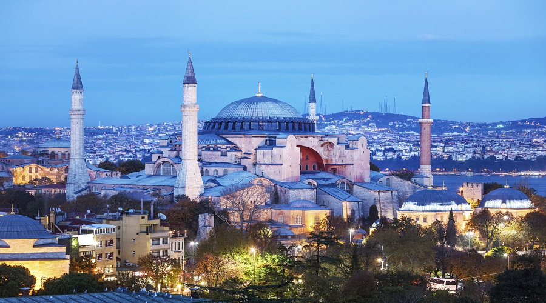

 Dünya mimarlık tarihinin günümüze kadar ayakta kalmış en önemli anıtları arasında yer alan Ayasofya; mimarisi, ihtişamı, büyüklüğü ve işlevselliği yönünden sanat dünyası açısından önemli bir yer teşkil etmektedir. Ayasofya Doğu Roma İmparatorluğu’nun İstanbul’da yapmış olduğu en büyük kilise olup aynı yerde üç kez inşa edilmiştir. İlk yapıldığında Megale Ekklesia (Büyük Kilise) olarak adlandırılmış, 5. yüzyıldan itibaren ise Ayasofya (Kutsal Bilgelik) olarak tanımlanmıştır. Ayasofya Doğu Roma İmparatorluğu boyunca hükümdarların taç giydiği, başkentin en büyük kilisesi olarak katedral işlevi görmüştür. Birinci kilise, İmparator Konstantios (337-361) tarafından 360 yılında yapılmıştır. Üstü ahşap çatı ile örtülü, uzunluğuna gelişen (bazilikal) planlı birinci yapı, İmparator Arkadios’un (395–408) karısı İmparatoriçe Eudoksia ile İstanbul Patriği İoannes Chrysostomos arasında çıkan anlaşmazlıklar nedeniyle, patriğin sürgüne gönderilmesi üzerine 404 yılında çıkan halk ayaklanması sonucunda yakılıp yıkılmıştır. (Bugün patriğin mozaik tasviri, Ayasofya’nın kuzey tymphanon duvarında görülebilmektedir.) Günümüzde ilk kiliseye ait herhangi bir kalıntı bulunmamakla birlikte, müze deposunda bulunan Megale Ekklesia damgalı tuğlaların bu yapıya ait olduğu düşünülmektedir. İkinci Kilise, İmparator II. Theodosios (408-450) tarafından 415 yılında yeniden inşa ettirilmiştir. Bu yapının, beş nefli, ahşap çatı ile örtülü ve anıtsal bir girişe sahip bazilikal planda olduğu bilinmektedir. Kilise, İmparator Justinianos’un (527–565) 5. saltanat yılında, aristokrat kesimi temsil eden maviler ile esnaf ve tüccar kesimi temsil eden yeşillerin İmparatorluğa karşı birleşmesi sonucunda çıkan ve tarihte “Nika İsyanı” olarak geçen, büyük halk ayaklanması sırasında 13 Ocak 532 yılında yıkılmıştır. 1935 yılında İstanbul Alman Arkeoloji Enstitüsü’nün A. M. Scheinder başkanlığında yapılan kazılarda, bugünkü zeminin yaklaşık 2.00 m altında görülebilen II. yapının Propylon’una (anıtsal giriş kapısı) ait basamaklar, sütun kaideleri ve On İki Havari’yi temsil eden kuzu kabartmaları ile süslü friz parçaları bulunmuştur. Ayrıca anıtsal girişe ait diğer mimari parçalar ise batı kısımdaki bahçede görülebilmektedir. Günümüz Ayasofya’sı İmparator Justinianos (527-565) tarafından dönemin iki önemli mimarı olan Miletos’lu (Milet) İsidoros ile Tralles’li (Aydın) Anthemios’a yaptırılmıştır. Tarihçi Prokopios’un aktardığına göre, 23 Şubat 532 yılında başlayan inşa, 5 yıl gibi kısa bir sürede tamamlanmış ve kilise 27 Aralık 537 yılında törenle ibadete açılmıştır. Kaynaklarda, Ayasofya’nın açılış günü İmparator Justinianos’un, mabedin içine girip, “Tanrım bana böyle bir ibadet yeri yapabilme fırsatı sağladığın için şükürler olsun” dedikten sonra, Kudüs’teki Hz. Süleyman Mabedi’ni kastederek “Ey Süleyman seni geçtim” diye bağırdığı geçer.
Üçüncü Ayasofya’nın mimarisindeki yenilik geleneksel bazilikal plan ile merkezi kubbeli planın bir araya getirilmesidir. Yapının üç nefi, bir apsisi, iç ve dış olmak üzere iki narteksi vardır. Apsisten dış nartekse kadar uzunluk 100 m. genişlik 69.50 m.dir. Kubbenin zeminden yüksekliği 55.60 m, çapı ise kuzey güney doğrultusunda 31,87 m, doğu batı doğrultusunda ise 30.86 m.dir. İmparator Justinianos Ayasofya’nın daha görkemli ve gösterişli olması için, maiyetindeki tüm eyaletlere haber göndererek, en güzel mimari parçaların Ayasofya’da kullanılması için toplatılmasını emretmiştir. Bu yapıda kullanılan sütun ve mermerler; Aspendos, Ephesos, Baalbek, Tarsus gibi Anadolu ve Suriye’deki antik şehir kalıntılarından getirilmiştir. Yapıdaki beyaz mermerler Marmara Adası’ndan, yeşil somakiler Eğriboz Adası’ndan, pembe mermerler Afyon’dan ve sarı mermerler Kuzey Afrika’dan getirilerek Ayasofya’da kullanılmıştır. Yapının iç kısmında yer alan duvar kaplamalarında; tek blok halinde mermerlerin ikiye bölünerek yan yana getirilmesi ile simetrik şekiller ortaya çıkarılmış ve damarlı renkli mermerlerin iç mekânda kullanılmasıyla dekoratif bir zenginlik oluşturulmuştur. Ayrıca, yapıda Efes Artemis Tapınağı’ndan getirilen sütunların neflerde, Mısır’dan getirilen 8 adet porfir sütununun ise yarım kubbeler altında kullanıldığı bilinmektedir. Yapıda 40 tanesi alt galeride, 64 tanesi ise üst galeride olmak üzere toplam 104 adet sütun bulunmaktadır. Ayasofya’nın mermer kaplı duvarları dışındaki tüm yüzeyler birbirinden güzel mozaiklerle süslenmiştir. Mozaiklerin yapımında altın, gümüş, cam, pişmiş toprak ve renkli taşlardan oluşan malzemeler kullanılmıştır. Yapıdaki bitkisel ve geometrik mozaikler 6. yüzyıla, tasvirli mozaikler ise ikonaklazma (Tasvir Kırıcılık Dönemi 730- 842) sonrasına tarihlenir. Ayasofya Doğu Roma Döneminde İmparatorluk Kilisesi olması nedeniyle İmparatorların taç giyme merasimlerinin yapıldığı mekândı. Bu sebeple Ayasofya’da ana mekanın (naos) sağında bulunan, renkli taşlardan yuvarlak ve geçmeli desenli yer döşemesi (omphalion), Doğu Roma İmparatorlarının taç giydiği bölümdür. IV. Haçlı Seferi sırasında İstanbul Latinler tarafından 1204- 1261 yılları arasında işgal edilmiş, bu dönemde gerek kent, gerekse Ayasofya yağmalanmıştır. 1261 yılında Doğu Roma kenti tekrar ele geçirdiğinde, Ayasofya’nın oldukça harap durumda olduğu bilinmektedir. Ayasofya, Fatih Sultan Mehmed’in (1451-1481) 1453’te İstanbul’u fethetmesiyle camiye çevrilmiştir. Fetihten hemen sonra yapı güçlendirilerek en iyi şekilde korunmuş ve Osmanlı Dönemi ilaveleri ile birlikte cami olarak varlığını sürdürmüştür. Yapıldığı tarihten itibaren çeşitli depremlerden zarar gören yapıya, hem Doğu Roma, hem de Osmanlı Döneminde destek amacıyla payandalar yapılmıştır. Mimar Sinan tarafından yapılan minareler ise yapıda destekleyici payanda işlevi görmektedir.
Ayasofya’nın kuzeyine, Fatih Sultan Mehmed Dönemi’nde bir medrese yaptırılmış, her dönemde bakım ve onarım çalışmalarından geçmiş, en kapsamlı tamir çalışması Sultan Abdülmecid Dönemi'nde (1839-1861) Fossati tarafından yapılmıştır. Sultan Abdülaziz Döneminde Ayasofya çevresinin yeniden düzenlenme çalışmaları sırasında medrese 1869- 1870 yılları arasında yıktırılmış ve1873- 1874 yılları arasında ise yeniden yaptırılmıştır. 1936 yılında yıkılmış olan Medresenin kalıntıları 1982 yılında yapılan kazılar sonucu ortaya çıkarılmıştır. Osmanlı Dönemi’nde, 16. ve 17. yüzyıllarda, Ayasofya’nın içine mihraplar, minber, müezzin mahfilleri, vaaz kürsüsü ve maksureler eklenmiştir. Mihrabın iki yanında bulunan bronz kandiller, Kanuni Sultan Süleyman (1520-1566) tarafından Budin Seferi (1526) dönüşünde camiye hediye edilmiştir. Ana mekâna girişin sağ ve sol köşelerinde bulunan Helenistik Döneme (MÖ. 4.-3. yy) ait iki mermer küp ise, Bergama’dan getirilerek, Sultan III. Murad (1574-1595) tarafından Ayasofya’ya hediye edilmiştir. Ayasofya’da, Sultan Abdülmecid Dönemi’nde 1847-1849 yılları arasında, İsviçreli Fossati Kardeşlere kapsamlı bir onarım yaptırılmıştır. Bu onarım çalışmaları sırasında, daha önce mihrabın kuzeyindeki niş içinde bulunan Hünkâr Mahfili kaldırılmış, yerine mihrabın solunda, sütunlar üzerinde yükselen, etrafı ahşap yaldızlı korkuluklarla çevrili Hünkâr Mahfili yapılmıştır. Aynı dönemde Hattat Kadıasker Mustafa İzzet Efendi tarafından yazılan 7.5 m. çapındaki 8 adet hat levhası ana mekânın duvarlarına yerleştirilmiştir. “Allah, Hz. Muhammed, Hz. Ebubekir, Hz. Ömer, Hz. Osman, Hz. Ali, Hz. Hasan ve Hz. Hüseyin” yazılı bu levhalar İslam âleminin en büyük hat levhaları olarak bilinmektedir. Aynı hattat kubbenin ortasına ise Nur Suresi’nin 35. ayetini yazmıştır. Ayasofya Mustafa Kemal Atatürk’ün emri ve Bakanlar Kurulu kararı ile müzeye çevrilmiş ve 1 Şubat 1935’de müze olarak, yerli ve yabancı ziyaretçilere açılmıştır. 1936 tarihli tapu senedine göre, Ayasofya “57 pafta, 57 ada, 7. parselde Fatih Sultan Mehmed Vakfı adına Türbe, Akaret, Muvakkithane ve Medreseden oluşan Ayasofya-i Kebir Camii Şerifi” adına tapuludur.
18 yaş ve altındaki Türkiye Cumhuriyeti vatandaşı gençler ve çocuklar ile bu yaş grubundaki öğrenci gruplarına refakat eden öğretmenler,
65 yaş ve üstü Türkiye Cumhuriyeti vatandaşları,
Gaziler ve refakatindeki anne, baba, eş ve çocukları ile şehit yakını kimlik kartı sahipleri,
T.C. Vatandaşı ve Yabancı Engelliler ile bir refakatçisi, (Görünür bir engel ve/veya belge ibrazı ile)
Er ve erbaşlar,
ICOM ve ICOMOS ile UNESCO kartı sahipleri,
Yerli ve yabancı basın kimlik kartı sahipleri,
Seyahat acentesi sahip veya sorumlu müdürleri,
Kültür ve Turizm Bakanlığı kokardını haiz profesyonel turist rehberleri,
Kültür ve Turizm Bakanlığı personeli ve emeklileri ile refakatindeki anne, baba, eş ve çocukları,
8 yaş ve altındaki yabancı uyruklu çocuklar,
Hayatboyu Öğrenme Programı çerçevesinde Comenius Okul Ortaklıkları ile Erasmus Öğrenci Değişim Programı kapsamındaki gruplar ile bu gruplara refakat eden öğretmenler (ülkemizdeki muhatapları ile yapılan sözleşmelerini ibraz etmeleri kaydıyla kimlik ibrazı aranmaksızın ücretsiz giriş olanağı sağlanacaktır).